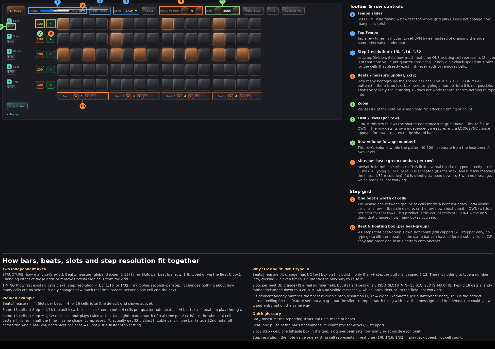

D20 Synth Workbench — sequencer structure reference

Beats / measure (the global stepper, 2–12) times Slots per beat (per-row, 1–8, set either by typing into the row's own field or via the floating Beat N box's −/+ buttons). Changing either of these adds or removes actual step cells from the grid.
Step resolution — 1/8, 1/16, or 1/32 (seq.stepDivision) — multiplies seconds-per-step. It changes nothing about how many cells are on screen; it only changes how much real time passes between one cell and the next.
These two axes are orthogonal by design. Raising the step resolution does not add cells, and adding cells does not change how fast each one plays.
Beats/measure = 4, Slots per beat = 4 → 16 cells total (the default grid).Step = 1/16 (default): each cell is a sixteenth note, 4 cells per quarter-note beat, a 4/4 bar takes 4 beats to play through.Step = 1/32: each cell now plays twice as fast, so the same 16-cell pattern finishes in half the time — same shape, compressed.Slots per beat = 8, not just a faster Step setting.SEQ_SLOTS_MIN=1, SEQ_SLOTS_MAX=8). Typing 16 gets silently clamped down to 8 on blur, with no visible message — which looks identical to the field "not working."Numbers match the callouts in the screenshot above.
Sets BPM. Pure timing, no effect on cell count.
Sets the same BPM by tapping in rhythm instead of dragging.
seq.stepDivision. How much real time one existing cell represents. Playback-speed multiplier only.
How many beat-groups the shared bar has. Stepper only, no text box.
Visual cell size on screen only, no effect on timing or count.
LINK follows the shared Beats/measure grid above. OWN gives the row its own independent measure, plus a LOOP/SYNC choice for how it relates to the shared bar.
This row's volume within the pattern (0–100), separate from the instrument's own Level.
rowSetUniformSlotsPerBeat(). Real text box, min 1, max 8.
The visible gap between groups of cells marks a beat boundary. Total visible cells for a row = beats (global, or the row's own if OWN) × slots per beat for that row.
−/+ steps that one beat-group's own slot count (still capped 1–8, stepper only). C/P copy and paste one beat's pattern onto another.